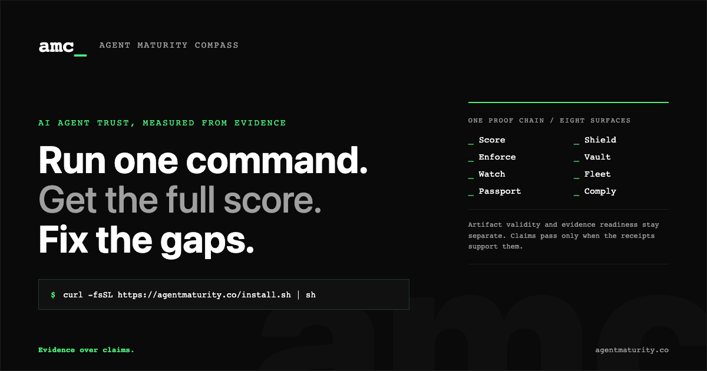

board brief
Know which AI agents are ready for real work.
AMC gives executives a maturity level, evidence trail, and action path for each AI agent. The point is not another dashboard; it is a defensible answer to what is deployed, what it can do, where it can fail, and what has to be fixed before autonomy expands.

L0-L5maturity levels for board reporting
244default diagnostic questions
142assurance packs for adversarial checks
41industry packs across 7 sectors
What The Board Sees
- Agent maturity level and score trend.
- Top risk areas and blocked autonomy decisions.
- Evidence coverage, integrity status, and audit readiness.
- EU AI Act risk classification where applicable.
- L3 business-risk memo for controlled-use board decisions.
What Engineering Does
- Runs `amc` in the agent workspace.
- Connects runtime traces, policies, and evidence sources.
- Uses guidance to fix weak controls and rerun score.
- Exports reports, binders, and CI gates for release decisions.
What Changes
- Vendor claims are separated from observed behavior.
- Risk exceptions become tracked work, not meeting notes.
- Autonomy is expanded only when evidence supports it.
- Compliance teams get repeatable proof instead of screenshots.
operating path
From first score to board-ready evidence_
01
Inventory
Identify agents, owners, tools, data access, and autonomy boundaries.
02
Score
Run the default diagnostic and capture evidence-weighted maturity.
03
Fix
Prioritize gaps by risk, compliance impact, and effort.
04
Govern
Use reports, audit binders, and release gates to keep agents inside approved autonomy.